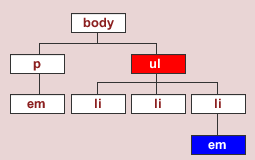
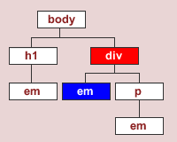
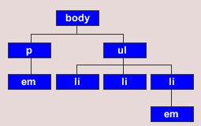
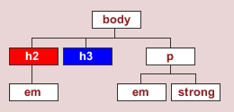
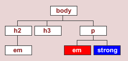

Web Standard

2019
문법규칙 Doctype
Box Model

The document tree (문서구조)

문서구조 - Descendant(후손)

문서구조 - Child(자손)

문서구조 - Sibling(형제)

Combining class and type selectors
(결합 클래스 와 타입 선택자)


Combining multiple classes
(여러 클래스 와 조합)

Descendant selectors(하위 선택자)

Descendant selectors(하위 선택자)


Descendant selectors(하위 선택자)

Descendant selectors(하위 선택자)


Child selectors(자손 선택자)

Child selectors(자손 선택자)


Universal selectors(전체 선택자)


Adjacent sibling selectors
(인접 형제 선택자)

Adjacent sibling selectors
(인접 형제 선택자)


Adjacent sibling selectors
(인접 형제 선택자)


Attribute selectors(속성 선택자)
속성 선택자들은 특성이나 속성 값에 따라
요소를 선택하는 데 사용됨.

Attribute selectors(속성 선택자)


Pseudo-classes(가상 클래스)


Pseudo-elements(가상 요소)